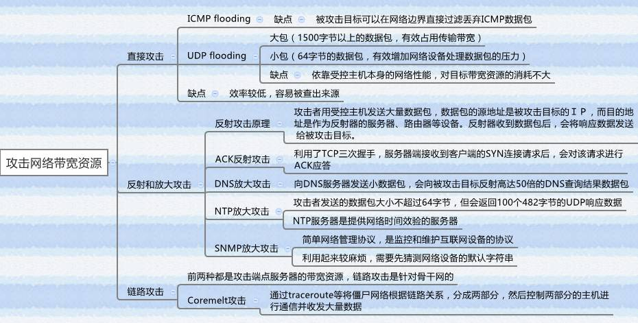
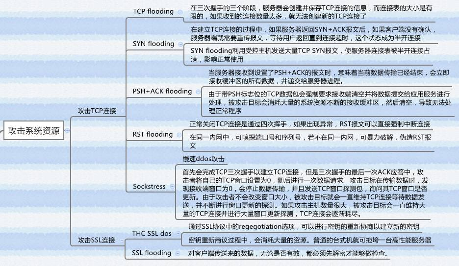
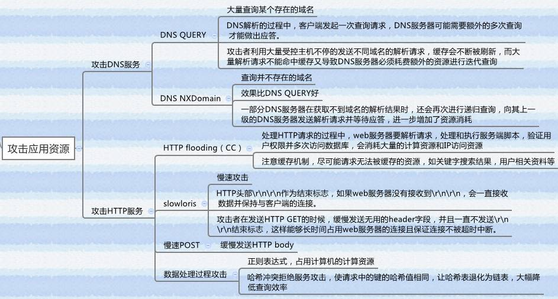

DOS与DDOS
DDOS基础
DDOS介绍
DoS指利用程序漏洞或一对一资源耗尽的Denial of Service拒绝服务 ， 一对一的攻击完全拼的是各自的资源，效果差
DDoS分布式拒绝服务 多对一的攻击汇聚资源能力，重点在于量大，属于资源耗尽型
Anonymous 匿名者
世界最著名的黑客组织，组织结构宽松，人员来自世界各地。以DDoS攻击著称的无政府主义者 -亦正亦邪，攻击恐怖组织也攻击政府宗教机构 ，近些年来涉足政治斗争，成员露面时均带有Guy Fawkes面具，最早的核心成员来自4chan图片社区 ，惯常雇佣外围黑客成员发动DDoS攻击
DDos分类
一、基于发起的方式分类
第一类以力取胜
海量数据包从互联网的各个角落蜂拥而来，堵塞IDC入口，让各种强大的硬件防御系统、快速高效的应急流程无用武之地。这种类型的攻击典型代表是ICMP Flood和UDP Flood，现在已不常见。
第二类以巧取胜
灵动而难以察觉，每隔几分钟发一个包甚至只需要一个包，就可以让豪华配置的服务器不再响应。这类攻击主要是利用协议或者软件的漏洞发起，例如Slowloris攻击、Hash冲突攻击等，需要特定环境机缘巧合下才能出现。
第三类是上述两种的混合
轻灵浑厚兼而有之，既利用了协议、系统的缺陷，又具备了海量的流量，例如SYN Flood攻击、DNS Query Flood攻击，是当前的主流攻击方式。
二、基于入侵的目标分类
1、DDoS网络带宽
基于巨量的Flood耗尽目标网络带宽资源 如：ICMP Flood, UDP Flood

2、DDoS系统资源
攻击协议漏洞发起的拒绝服务攻击 如：Syn Flood、Ping of Death、ARP、DNS、802.11、SSL

3、DDoS应用资源
针对应用软件和操作系统漏洞发起的拒绝服务攻击，大量频繁访问消耗系统资源严重的应用（CC)，通常表现为操作系统运行正常，网络流量不大，但服务停止响应 ，可以是一击毙命的，也可以是耗尽目标资源的

攻击现象、流程、方式
攻击现象
DDoS的表现形式主要有两种， 一种为流量攻击，主要是针对网络带宽的攻击，即大量攻击包导致网络带宽被阻塞，合法网络包被虚假的攻击包淹没而无法到达主机； 另一种为资源耗尽攻击，主要是针对服务器主机的攻击，即通过大量攻击包导致主机的内存被耗尽或CPU被内核及应用程序占完而造成无法提供网络服务。
当被DDoS攻击时，主要表现为： 1. 被攻击主机上有大量等待的TCP连接。 2. 网络中充斥着大量的无用的数据包，源地址为假。 3. 制造高流量无用数据，造成网络拥塞，使受害主机无法正常和外界通讯。 4. 利用受害主机提供的服务或传输协议上的缺陷，反复高速地发出特定的服务请求，使受害主机无法及时处理所有正常请求。 5. 严重时会造成系统死机。
攻击流程
攻击者进行一次DDoS攻击大概需要经过了解攻击目标、攻占傀儡机、实际攻击三个主要步骤，下面依次说明每一步骤的具体过程：
1、了解攻击目标
了解攻击目标就是对所要攻击的目标有一个全面和准确的了解，以便对将来的攻击做到心中有数。主要关心的内容包括被攻击目标的主机数目、地址情况。目标主机的配置、性能、目标的带宽等等。对于DDoS攻击者来说，攻击互联网上的某个站点，有一个重点就是确定到底有多少台主机在支持这个站点，一个大的网站可能有很多台主机利用负载均衡技术提供服务。所有这些攻击目标的信息都关系到后面两个阶段的实施目标和策略，如果盲目的发动DDoS攻击就不能保证攻击目的的完成，还可能过早的暴露攻击者的身份，所以了解攻击目标是有经验的攻击者必经的步骤。
2、攻占傀儡机
攻占傀儡主机就是控制尽可能多的机器，然后安装相应的攻击程序。在主控机上安装控制攻击的程序，而攻击机则安装DDoS攻击的发包程序。攻击者最感兴趣，也最有可能成为别人的傀儡主机的机器包括那些链路状态好、性能好同时安全管理水平差的主机。攻击者一般会利用已有的或者未公布的一些系统或者应用软件的漏洞．取得一定的控制权，起码可以安装攻击实施所需要的程序，更厉害的可能还会取得最高控制权、留下后门等等。在早期的DDoS攻击过程中，攻占傀儡主机这一步主要是攻击者自己手动完成的，亲自扫描网络，发现安全性比较差的主机，将其攻占并且安装攻击程序。但是后来随着DDoS攻击和蠕虫的融合，攻占傀儡机变成了一个自动化的过程，攻击者只要将蠕虫放入网络中，蠕虫就会在不断扩散中不停地攻占主机，这样所能联合的攻击机将变得非常巨大，DDoS攻击的威力更大。
3、实际攻击
DDoS攻击的最后一个阶段就是实际的攻击过程，攻击者通过主控机向攻击机发出攻击指令，或者按照原先设定好的攻击时间和目标，攻击机不停的向目标或者反射服务器发送大量的攻击包，来吞没被攻击者，达到拒绝服务的最终目的。和前两个过程相比，实际攻击过程倒是最简单的一个阶段，一些有经验的攻击者可能还会在攻击的同时通过各种手段检查攻击效果，甚至在攻击过程中动态调整攻击策略，尽可能清除在主控机和攻击机上留下的蛛丝马迹。
攻击方式
一、SYN Flood攻击
攻击原理： 依据tcp建立连接的三次握手。此攻击以多个随机的源主机地址向目的主机发送syn包，而在收到目的主机的syn＋ack包后并不回应，目的主机就为这些源主机建立大量的连接队列，由于没有收到ack一直维护这些连接队列，造成资源的大量消耗而不能向正常的请求提供服务。 与之类似的攻击方式还有ackflood、s-ackflood、finflood、rstflood、tcpflood
二、UDP Flood攻击
攻击原理： 有时被保护服务器也有同外部服务器进行udp交互的需求，攻击者就会利用此交互对被保护服务器进行udp反射放大攻击。 此攻击在短时间那冒充被攻击地址向外部公用的服务器发送大量的udp请求包，外部服务器收到虚假的udp请求就会回复大量的回应包给被攻击服务器地址，造成目标主机被保护服务器不能处理其他正常的交互流。
三、ICMP Flood攻击
ICMP Flood攻击属于流量型的攻击方式，是利用大的流量给服务器带来较大的负载，影响服务器的正常服务。由于目前很多防火墙直接过滤ICMP报文。因此ICMP Flood出现的频度较低。
四、Connection Flood攻击
攻击原理： 利用真实 IP 地址（代理服务器、广告页面）在服务器上建立大量连接服务器上残余连接(WAIT状态)过多，效率降低，甚至资源耗尽，无法响应； 蠕虫传播过程中会出现大量源IP地址相同的包，对于 TCP 蠕虫则表现为大范围扫描行为； 消耗骨干设备的资源，如防火墙的连接数。
五、HTTP Flood攻击
真正令各大厂商以及互联网企业头疼的是HTTP Flood攻击。HTTP Flood是针对Web服务在第七层协议发起的攻击。它的巨大危害性主要表现在三个方面：发起方便、过滤困难、影响深远。 HTTP Flood攻击在HTTP层发起，极力模仿正常用户的网页请求行为，与网站业务紧密相关，安全厂商很难提供一套通用的且不影响用户体验的方案。在一个地方工作得很好的规则，换一个场景可能带来大量的误杀。
六、DNS Query Flood攻击
作为互联网最基础、最核心的服务，DNS自然也是DDoS攻击的重要目标之一。打垮DNS服务能够间接打垮一家公司的全部业务，或者打垮一个地区的网络服务。DNS Query Flood就是攻击者操纵大量傀儡机器，对目标发起海量的域名查询请求。为了防止基于ACL的过滤，必须提高数据包的随机性。常用的做法是UDP层随机伪造源IP地址、随机伪造源端口等参数。在DNS协议层，随机伪造查询ID以及待解析域名。随机伪造待解析域名除了防止过滤外，还可以降低命中DNS缓存的可能性，尽可能多地消耗DNS服务器的CPU资源。
七、CC攻击
攻击原理： 互联网的架构追求扩展性本质上是为了提高并发能力，各种SQL性能优化措施：消除慢查询、分表分库、索引、优化数据结构、限制搜索频率等本质都是为了解决资源消耗，而CC大有反其道而行之的意味，占满服务器并发连接数，尽可能使请求避开缓存而直接读数据库，读数据库要找最消耗资源的查询，最好无法利用索引，每个查询都全表扫描，这样就能用最小的攻击资源起到最大的拒绝服务效果。
八、慢速连接攻击
攻击原理：
在http协议中规定，http的头部以连续的“\r\n\r\n”作为结束标志。许多web服务器在处理http请求的头部信息时，会等待头部传输结束后再进行处理。因此，如果web服务器没有接收到连续的“\r\n\r\n”，就会一直接收数据并保持与客户端的连接。Slow-header的工作原理是攻击者在发送http get请求时，缓慢的发送无用的header字段，并且一直不发送“\r\n\r\n”结束标志。Web服务器能够处理的并发连接数是有限的，如果攻击者利用大量的主机发送这种不完整的http get请求把那个持续占用这些连接，就会耗尽web服务器的资源。
防御原则
在响应方面，虽然还没有很好的对付攻击行为的方法，但仍然可以采取措施使攻击的影响降至最小。对于提供信息服务的主机系统，应对的根本原则是：尽可能地保持服务、迅速恢复服务。 由于分布式攻击入侵网络上的大量机器和网络设备，所以要对付这种攻击归根到底还是要解决网络的整体安全问题。真正解决安全问题一定要多个部门的配合，从边缘设备到骨干网络都要认真做好防范攻击的准备，一旦发现攻击就要及时地掐断最近攻击来源的那个路径，限制攻击力度的无限增强。网络用户、管理者以及ISP之间应经常交流，共同制订计划，提高整个网络的安全性。
DDoS防护的未来
因为DDoS防护是旁路部署架构，因此没办法做到对攻击的实时清洗，只能做到分钟级或者秒级响应。
- 因此努力的一个方向，是如何缩短从攻击开始，到攻击流量进防护这段时间的延迟；
- 同时，随着IPv6网络的全面部署实施，地址的数量和范围，与IPv4时代不在一个数量级，如何针对每一个IPv6目标地址进行快速攻击发现，也是一项非常大的挑战
- 第三点，攻击检测的面可以更广，从单纯的流量阈值来检测发现攻击，可以深入到流量成分的分析，比如SYN包占比、HTTP QPS占比等，也可以是触发攻击的条件。